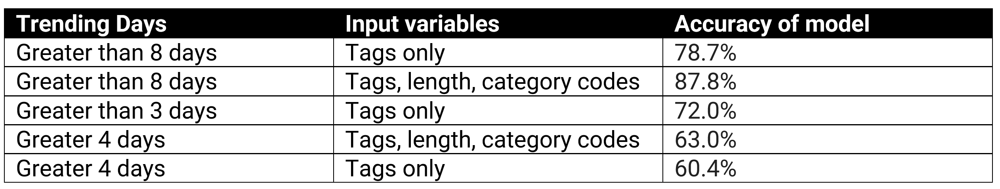

NLP Model Prediction Analysis
For this example, number of trending days for YouTube can be identified as a classification problem. This is binary classification since there are only 2 classes:
- trending greater than 4 days
- trending 4 days or less
The classifier utilizes some training data to understand how given input variables relates to the class. In this case the following have been used to train the data:
- known trending days
- length of the tag
- YouTube category
When the classifier is trained accurately, it can be used to predict trending days for the testing data.
- Naïve Bayes can be used on a large data set
This data set for US data only has tags for 21350 records.
